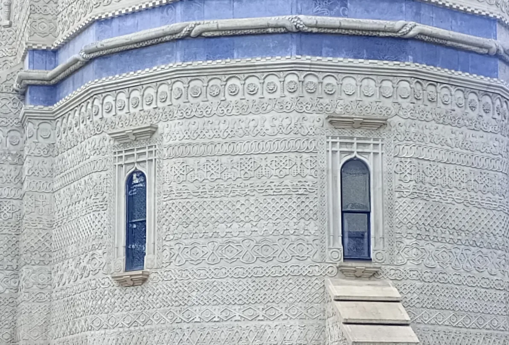
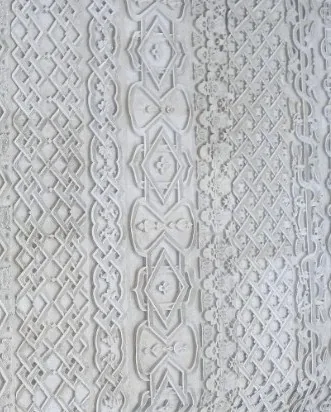

Este, poate, cea mai frumoasă „dantelă în piatră" din România. La prima vedere pare o broderie întinsă peste ziduri — dar totul e sculptat în piatră, de la temelie până sub turle. Biserica Sfinților Trei Ierarhi e ctitoria de suflet a unui domn care a vrut ca Iașul să vorbească pe limba marilor curți ale lumii.
It may be the loveliest "lace in stone" in Romania. At first glance it looks like embroidery stretched over the walls — yet all of it is carved in stone, from the base to beneath the towers. The Church of the Three Holy Hierarchs is the beloved foundation of a ruler who wanted Iași to speak the language of the world's great courts.
CtitorulThe founderCtitoria lui Vasile Lupu
Vasile Lupu's foundation
Vasile Lupu, domn al Moldovei între 1634 și 1653, a ridicat biserica între 1637 și 1639, ca cea mai importantă ctitorie a domniei sale. A fost sfințită pe 6 mai 1639 de mitropolitul Varlaam și închinată celor trei Sfinți Ierarhi — Vasile cel Mare, Grigorie Teologul și Ioan Gură de Aur. De la bun început a fost gândită ca necropolă domnească, cu materiale prețioase și decor bogat, într-un elan spre lumea bizantină.
Vasile Lupu, ruler of Moldavia between 1634 and 1653, raised the church between 1637 and 1639 as the most important foundation of his reign. It was consecrated on 6 May 1639 by Metropolitan Varlaam and dedicated to the three Holy Hierarchs — Basil the Great, Gregory the Theologian and John Chrysostom. From the outset it was conceived as a princely necropolis, with precious materials and rich decoration, in a reach toward the Byzantine world.
Dantela în piatrăLace in stoneO broderie sculptată pe toate fațadele
Embroidery carved across every façade
Ce o face unică e sculptura. Toate cele patru fațade sunt acoperite, ca o dantelă, de decorații organizate pe 30 de brâuri (registre) orizontale, fiecare cu alt motiv: nișe, coloane, mici portice orientale cu arcade, flori, vaze persane și motive geometrice de sursă georgiană ori armeană. Sculptura îmbracă totul, până la contraforți — un contrast armonios între formele arhitecturale clare și decorul care le acoperă. E, poate, cea mai originală creație a artei moldovenești.
What makes it unique is the carving. All four façades are covered, like lace, with decoration organised in 30 horizontal bands, each with a different motif: niches, columns, small oriental porticoes with arcades, flowers, Persian vases and geometric patterns of Georgian or Armenian origin. The carving clothes everything, down to the buttresses — a harmonious contrast between clear architectural forms and the decoration that embraces them. It may be the most original creation of Moldavian art.


Nicio bucată de perete nu a rămas goală — piatra însăși a fost brodată.
Not a patch of wall was left bare — the stone itself was embroidered.
Un panteon al istoriei
A pantheon of history
În pronaosul bisericii se află mormintele: în stânga, familia ctitorului Vasile Lupu; în dreapta, doi domnitori legați de istoria țării — Dimitrie Cantemir și Alexandru Ioan Cuza. Așa, dincolo de frumusețea ei, biserica e și un loc de reculegere, un panteon al istoriei naționale.
In the church's pronaos lie the tombs: on the left, the family of the founder Vasile Lupu; on the right, two rulers bound to the country's history — Dimitrie Cantemir and Alexandru Ioan Cuza. So, beyond its beauty, the church is also a place of remembrance, a pantheon of national history.